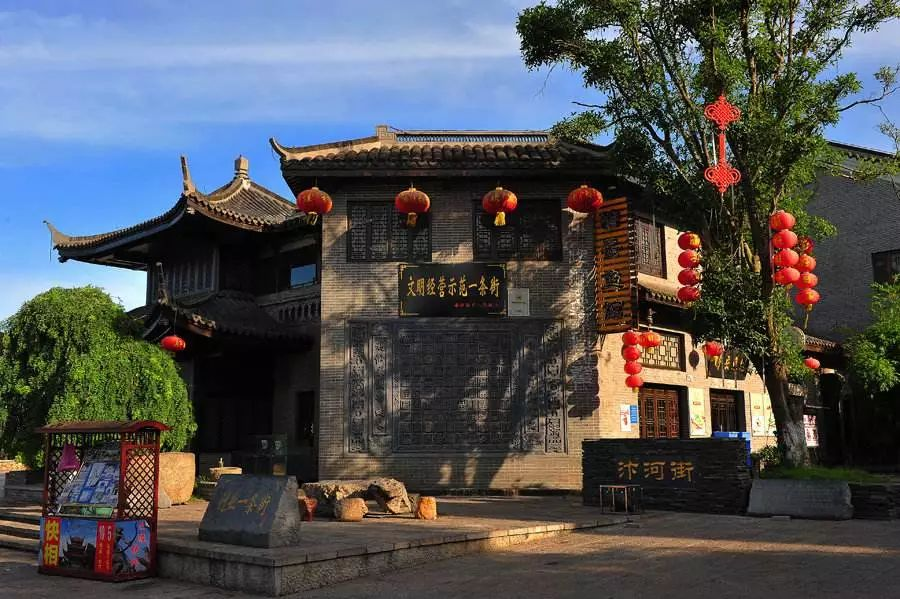
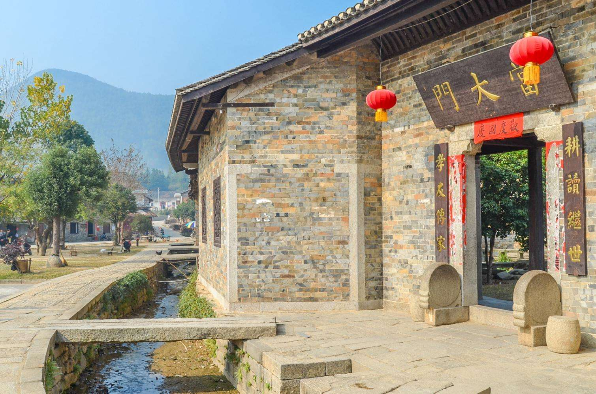

位于岳阳县张谷英镇，因人而得名。村内有聚族而居的一组古建筑群，建于明清时期，占地1万多平方米，大小房屋1300多间，有“江南第一屋场”，“天下第一村”之称。天井连天井，厅堂要堂，浑然一体，屋宇绵延，檐廓衔接，睛不曝日，雨不湿鞋，展现出我国传统民间建筑的特点和古朴的民俗风情。
傍溪建有一条长廊，廊里用青石板铺路，沿途可以通达各家门户，连接着各个巷道，巷道两旁由青砖垒墙，高达10余米。墙高且厚，宜于防火，称为风火墙。大屋场里像这样的巷道一共有60条，它们纵横交错，四通八达，最长的巷道有153米，所有的巷道加在一起，总长度达1459米。
五进堂的华板、柱、椽、斗拱、檐，天井上方四周屏门隔扇、窗扇及下方栏板、梁、枋，厢房内台、凳、桌、椅、几、案、床、箱、橱、轿等，都巧妙地镶嵌了千姿百态的木雕。走进张谷英古建筑群，你便走进了一座民间木雕的圣殿。